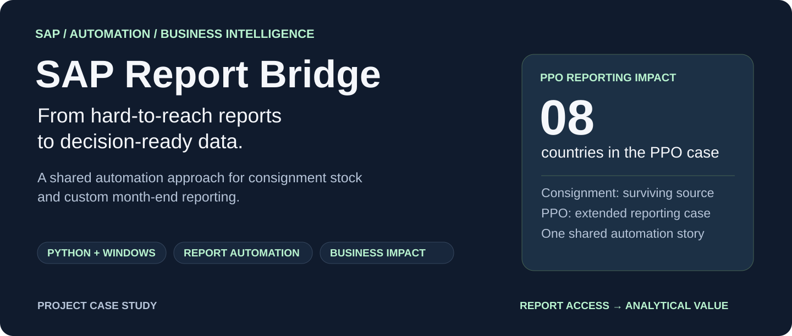
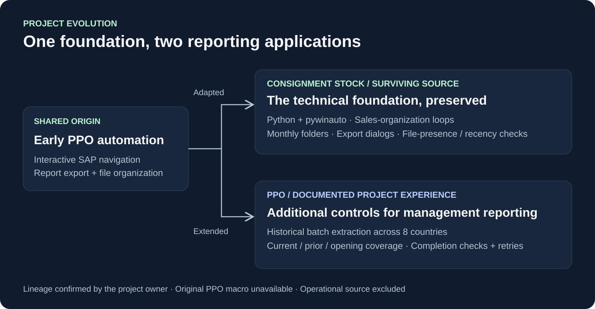
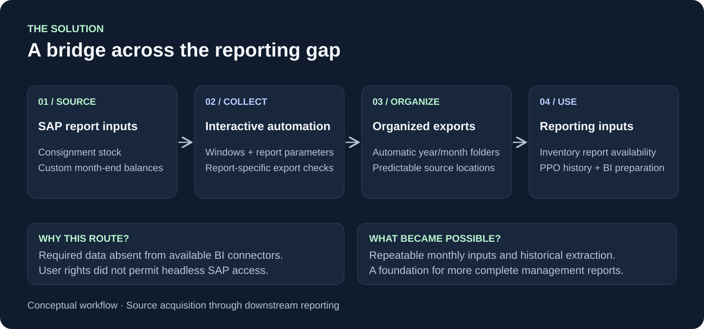
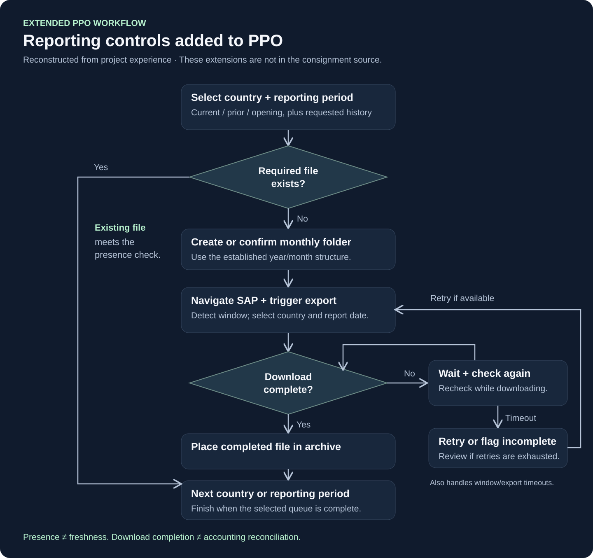

Turn SAP reporting gaps into useful business data.
I developed SAP desktop automation for custom month-end balances, then adapted its early foundation to consignment stock reporting. The PPO workflow gained further controls for historical and recurring reporting.
My contribution combined SAP workflow automation, automatic monthly filing, and historical reporting controls. The outcome: local adjustments and detailed data became available for country and regional management reporting.
Archive inventory: 8 sales organizations, November 2024–January 2026. Not a claim of continuous coverage. PPO operational outcomes are described by the project owner.
Build the workflow. Reuse it. Extend its reporting value.
Built interactive SAP acquisition, automated monthly folders, extended PPO with historical downloads and reporting-period checks, and adapted the early foundation for consignment stock.

Close the gap between SAP and the management report.
Before: a fragile monthly workbook
Finance relied on copying formulas as values, complex manual filters, and carrying balances forward. Locally relevant adjustments were missing from connector-fed BI dashboards.
Enabled: repeatable reporting inputs
Automated downloads and filing created a historical archive for downstream BI, supporting country and regional management reports with the required local detail.
One collection pattern. Broader analytical value.
The user's access rights did not permit headless SAP interaction. The workflow uses the available interactive session and responds to application windows and download states.

What the PPO extension made possible
Historical perspective
Batch extraction across eight countries created the foundation for a monthly balance database used in BI dashboards.
Local relevance
Country and regional reports could include adjustments that standard connector feeds had been missing.
Wider applicability
Consignment stock demonstrates reuse of the early approach. Detailed customer sales history is another application identified through this work.
Surviving code and the extended reporting design.
Navigate from the actual window state
Python and pywinauto identify and focus SAP windows, with polling and retries during navigation.
Check the saved output
After export, test whether the expected file exists and was modified within the last five minutes. This is a recency check, not proof of completeness.
Make the archive organize itself
Create the correct monthly folder within the business's existing year/month structure.
Process multiple organizations
Loop through the supplied sales organizations and handle spreadsheet, Save As and overwrite dialogs.
Extend for PPO reporting needs
The PPO case adds historical periods, current/prior/year-opening checks, completion monitoring and stronger retry handling, as described from project experience.
The consignment source survives; the original PPO macro is unavailable. The diagram reconstructs the extended PPO workflow and does not represent the consignment implementation.
Read the architecture notes ↗{kind=link}

Adapt the report. Keep the useful pattern.
PPO addressed custom month-end balances for orders not yet finalized and recognized as revenue, with local reporting dates and inclusion rules varying between countries. Consignment stock applied the early automation foundation to inventory reporting.
The transferable idea applies wherever an authorized SAP report contains detail missing from an available BI connection. Each additional report needs its own parameters, navigation sequence, export format and checks.
Scope and evidence
This is a sanitized documentation showcase. The local review covered the surviving Python/pywinauto consignment macro, its launcher, downstream Python/pandas and Qlik code, PPO export filenames and a macro log. Shared lineage and advanced PPO behavior are documented from the owner's account. A separate Selenium experiment targets TM1 Web and is not the SAP macro. No live SAP session or BI reload was run for this portfolio review. Time savings and error-rate improvements were not measured.